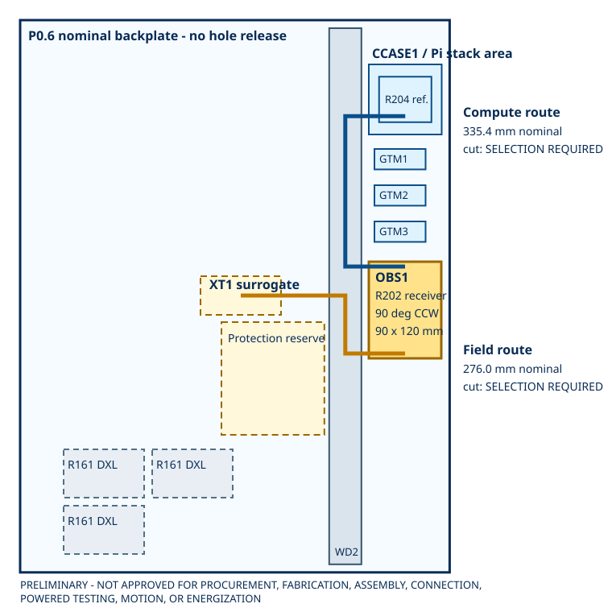

90 x 120 mmrotated receiver envelope
335.4 mmnominal compute route
276.0 mmnominal field route
0released cut lengths
13open holds
Combined panel screen

The blue and gold paths use separate nominal WD2 spans. Clearances are planar arithmetic only; they do not prove depth, bend, fill, partitioning, temperature, or installed access.
Candidate transforms
| Reference | Origin (mm) | Envelope | Rotation | State |
|---|---|---|---|---|
| OBS1 / R202 carrier | 433.0, 300.0 | 90.0 x 120.0 | 90 deg counterclockwise | ANALYTICAL PLACEMENT CANDIDATE - NO DRILLING |
| PIOBS1 / R204 carrier | 445.75, 70.25 | 65.0 x 56.5 | 0 deg reference only | REFERENCE TRANSFORM ONLY - RECEIVED OFFSET UNKNOWN |
Length arithmetic, not a cut schedule
| Route | Nominal centreline | Equation | Cut length | Missing terms |
|---|---|---|---|---|
| PIOI-ROUTE-COMPUTE | 335.4 mm | |478.25-403.8| + |306.0-119.25| + |478.0-403.8| | SELECTION REQUIRED | received Pi/case offset; connector exit; bend correction; service loop; termination allowance; strain relief; tolerance |
| PIOI-ROUTE-FIELD | 276.0 mm | |478.0-403.8| + |414.0-342.0| + |403.8-274.0| | SELECTION REQUIRED | exact XT1 terminal coordinates; connector exit; bend correction; service loop; termination allowance; strain relief; tolerance |
Thirteen holds remain
| ID | Evidence needed | State |
|---|---|---|
| PIOI-HOLD-001 | received P0.6 backplate and enclosure datums, usable edge keepouts and closed-cover depth | OPEN |
| PIOI-HOLD-002 | received R202 PCB dimensions, connector overhang and four-hole metrology | OPEN |
| PIOI-HOLD-003 | exact observation-carrier standoffs, fasteners, locking, coating treatment and load proof | OPEN |
| PIOI-HOLD-004 | received Pi 5, PI5-CASE-D, rail bracket, cooler, R204 socket and carrier stack transform | OPEN |
| PIOI-HOLD-005 | fabricator and assembler acceptance of R202 and R204 native candidates | OPEN |
| PIOI-HOLD-006 | exact WD2 entry/exit geometry, fill, cover fit, bend radii, partitions and domain separation | OPEN |
| PIOI-HOLD-007 | exact XT1 terminal coordinates and accepted five-wire field harness stock/termination schedule | OPEN |
| PIOI-HOLD-008 | six-wire Pi harness measured route, exact cut lengths, labels, retention and service loop | OPEN |
| PIOI-HOLD-009 | five-wire field harness measured route, exact cut lengths, labels, retention and service loop | OPEN |
| PIOI-HOLD-010 | direct-strip preparation, torque, exposed-strand, pull, retorque and inspection process | OPEN |
| PIOI-HOLD-011 | 3.3 V loading, startup/shutdown, brownout, back-power and cable-fault acceptance | OPEN |
| PIOI-HOLD-012 | continuity, polarity, isolation, EMC, thermal, fault-injection and HIL evidence | OPEN |
| PIOI-HOLD-013 | qualified electrical, panel-layout and functional-safety review plus separate written work authority | OPEN |
placement schedule - clearance register - route nodes - length calculations - interface parity - acceptance matrix